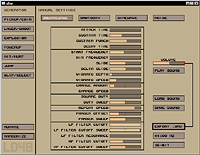

|
|
|
|
|
|
|
|
|
sfxr
|
|
|
|
|
|
This is a little tool I made in connection with the 10th Ludum Dare
competition held in December 2007. Its original purpose was to provide a
simple means of getting basic sound effects into a game for those
people who were working hard to get their entries done within the 48
hours and didn't have time to spend looking for suitable ways of doing
this.
The idea was that they could just hit a few buttons in this application
and get some largely randomized effects that were custom in the sense
that the user could accept/reject each proposed sound.
It turned out to work rather well and a lot of the entrants used it,
which is cool. Anyone else in the same situation (need some basic sound
effects, don't really care about top quality, have no idea where to get
them) should find it pretty useful, if nothing else then just as
placeholder sounds to kill the silence until final content has been
produced.
Basic usage involves hitting the randomize button (or one of the other
buttons to your left if you need a specific standard sound), listen to
the generated sound, then deciding if it sounds ok or not. If it does,
then export it to .WAV and you're done, if not - just hit the button
again and get something different.
All the parameters used to create each sound are manually tweakable to
allow fine-tuning if you feel like getting your hands dirty. Space is a
useful shortcut to play the current sound.
There will probably be a minor update of this in the near future, adding some convenient features.
Source code is available and you're free to use it for anything you please. I've put it under the MIT free software license.
Here is the original post/announcement of sfxr.
And here is a cool Mac port with snazzy GUI.

sfxr.zip (50 kB)
Current win32 build
sfxr-sdl-1.1.tar.gz (19 kB) or old mjau mirror (62 kB)
Portable version by mjau/GerryJJ, includes source code (need SDL and GTK 2 to make)
(version 1.1 has licensing info and some Linux-related improvements)
sfxdemo.mp3 (2.5 MB)
Some random output from the program, I'm just playing around without purpose here
Back to all projects
|
|
|
|
|
|
|
|
|
|
|
{kind=link}